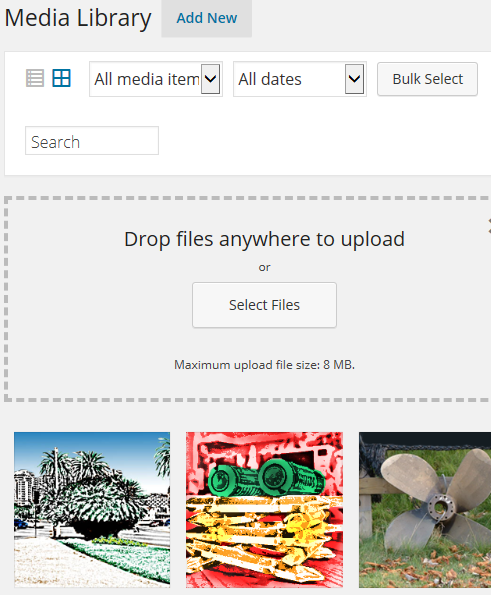
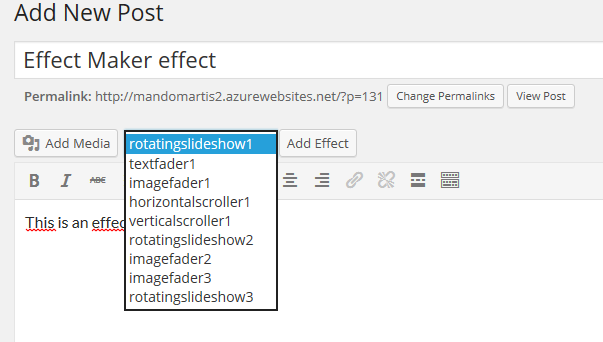
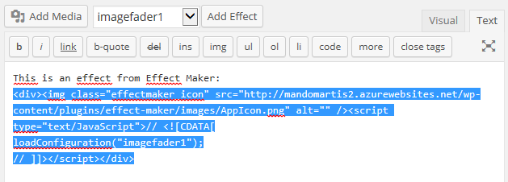

Some of your questions may not be answered by this tutorial. If that's the case, then check the FAQ instead.
The first thing you have to do is select the effect you want to customize from the gallery. As you see below, the gallery can also be flipped into an horizontal position. For smaller screens, vertical position is recommended. A preview is displayed of the effect when you click on the icon.


When you click on an effect you will see a configuration dialog. The most important to note is the configuration save name. When you save your effect, this is the "file name" that it will have. You must remember this when you insert the effect into your page later on. The effect width and height (in pixels) is important here, because for some effects (i.e. slide shows) this will be a limit for the effect for displaying its graphics. It also indicates the size of the effect on the screen.

The question icons will display a tip which is specific for the type of effect and field you are customizing.
When selecting an effect that displays a sequence of texts or slides like for instance Text Fader, you will see a list in the configuration dialog. For each item you see four icons for each items. One indicates the index, the trashbox is for deleting that particular item and the upwards and downwards pointing arrows are for changing the placement of that item in the list. At the bottom of the list you have a "+" icon for adding additional empty items.

You can set the color for a text based effect using the color picker. Note that some effects requires you to set the background color as well, for instance scrollers which need to know the background color of the page you intend to place the effect on. This is in order to make sure the fadout effect color at the edges matches the page background.

Text based effects lets you set the font, font style and size. The size is in pixels. The styles you can select is: Normal, Bold, Italic and Oblique. You can write any font you want, but make sure you specify a font that your web site supports (either standard fonts or fonts loaded with CSS). Note that by emptying the font field you can see the list of the standard fonts displayed below.

When specifying or setting links. Remember that the links will be invoked depending on the URL target field. The default value is usually "_self" which means that the link will be invoked in the same browser tab. You can also specify the name of a frame, "_blank" to open a new window and some other options according to the HTML specification.
First use the media library in Wordpress dashboard to upload the images you like to use with Effect Maker.

When you run Effect Maker the next time and you click on an image drop down field. You will be able to see the contents of your media library. Make sure you remember the name of your files that you uploaded and the date you uploaded them. See below.
Very important! Make sure the images are not too lager (in pixels). Some effects can't handle it.
When clicking on the "Apply" button in the configuration dialog, the effect will be saved with the configuration name you specified. It is now ready to be inserted into your page.

If you regret the changes you have made to your effect with the configuration dialog, but not yet pressed the "Apply" button, then you can revert the changes by clicking the "Restore" button. This will simply reload old configuration.
You have a dropdown list in the gallery which shows your previous configurations. You can load them with the "load" button or delete them with the "delete" button. Note that deleting previous configurations cannot be undone.

First edit the post you like to insert the effect into or add a new post. Note, you must be using the visual editor mode in order to insert effects. Now remember the name of your Effect Maker configuration? Place yourself where you want to insert the effect and select the configuration from the dropdown list next to the "Add Effect" button.

Click on the "Add Effect" button and an Effect Maker icon is inserted indicating that an effect is present there.
To delete the effect you must now go into Text mode in the editor and delete the HTML code that looks like this:

Note that after you inserted your effect and make changes to your existing configuration using the Effect Maker, you don't need to insert it again. The HTML code used above reads the current configuration for your effect.
Important note! Although you can insert several instances of an effect to one page(i.e. rotatingslideshow1, rotatingslideshow2, rotatingslideshow3, etc.) you can only insert a single configuration (unique name) into each wordpress page. Otherwise you will se strange effects or malfunctions. If you want to use the same effect on the same page, create a new configuration under a new name.
The difference with the pro and basic editions is that the pro edition has many more effects. Support the continued development of Effect Maker by purchasing the pro edition.
You can set numerous of other settings for the effects which changes their behaviour.
Click here to read the license agreement for this plugin
Mandomartis Effect Maker
Version 1.2.0.0
Developed by Anibal Wainstein
Designed by Georgina Garrido Piñas
Photos by Georgina Garrido Piñas, Antonio Rolando Pizarro and Raymond Knoll
colpick color picker by Jose Vargas
© Mandomartis 2014-2015
www.effectmaker.com